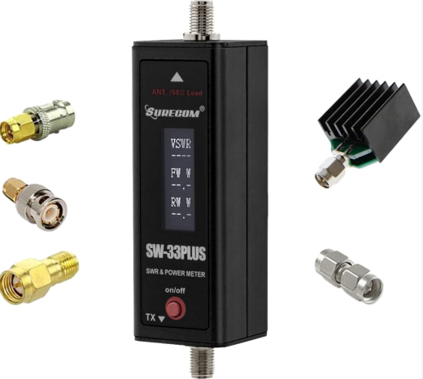
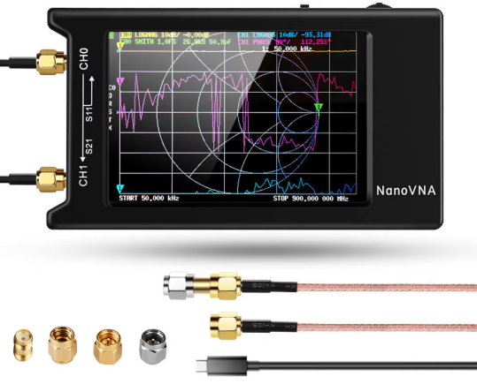

Primer instrumento
SURECOM SW-33 Plus

Un medidor compacto para VHF/UHF que permite revisar la potencia RF que entrega el equipo y el ROE de la instalación.
ROE, explicado fácil:
indica qué tan bien está adaptada la antena al equipo. Cuando el valor es alto, hay más potencia reflejada y conviene revisar la instalación.
indica qué tan bien está adaptada la antena al equipo. Cuando el valor es alto, hay más potencia reflejada y conviene revisar la instalación.
- ✔ Mide potencia RF
- ✔ Mide ROE
- ✔ Rango declarado: 125–525 MHz
- ✔ Hasta 100 W según fabricante
Importante: el fabricante indica que el SW-33 Plus no es para medir una transmisión DMR. Haz estas pruebas en analógico.
Siguiente paso
NanoVNA-H4

Cuando comienzas a construir o ajustar antenas, el NanoVNA-H4 permite mirar mucho más que un solo número de ROE.
¿Para qué sirve?
Puedes barrer un rango de frecuencias y ver dónde la antena presenta mejor adaptación y menor ROE.
Puedes barrer un rango de frecuencias y ver dónde la antena presenta mejor adaptación y menor ROE.
- ✔ Analiza muchas frecuencias
- ✔ Permite ver dónde cae el ROE
- ✔ Ayuda a ajustar antenas caseras
- ✔ Muy útil para Flower Pot, dipolos y Yagi
No es un medidor mágico de alcance: analiza el comportamiento eléctrico de la antena.
Los accesorios incluidos pueden variar según el vendedor.
Ruta de medición RUFCOM
Primero aprende a revisar potencia y ROE. Después, cuando empieces a construir antenas, da el salto a un NanoVNA.
SW-33 Plus → entender ROE → construir antenas → NanoVNA-H4